Getting Started
What is AI?
Artificial Intelligence (AI) is a fascinating and rapidly evolving field that involves the development of intelligent computer systems capable of performing tasks that typically require human intelligence. AI systems are designed to understand and interpret data, learn from it, and make intelligent decisions based on patterns and algorithms. They encompass various subfields such as machine learning, robotics, natural language processing, and computer vision. AI enables machines to mimic human cognitive processes, including problem-solving, decision-making, perception, and language understanding. By harnessing the power of AI, we can automate tasks, process vast amounts of data, and derive valuable insights, leading to improved efficiency and innovation across various industries. Understanding AI and its potential applications is crucial for students in class 7-8 as it equips them with the knowledge and skills necessary to navigate the digital world and contribute to the future of technology.
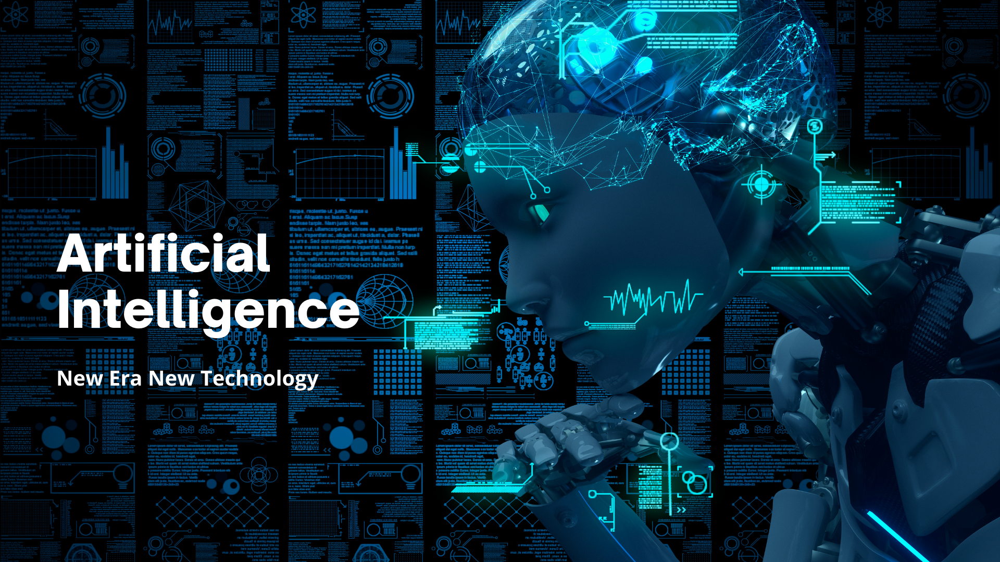
Why is AI important?
AI has become increasingly important in today's world due to its ability to revolutionize the way we live and work. It has the potential to transform industries and enhance various aspects of our lives. AI systems can automate repetitive tasks, analyze complex data sets with speed and precision, and provide intelligent recommendations and insights. This technology has already made significant advancements in healthcare, transportation, finance, entertainment, and other domains. AI-powered systems can assist in diagnosing diseases, improving transportation efficiency, detecting fraud, personalizing user experiences, and much more. Furthermore, AI has the potential to tackle global challenges, such as climate change, by enabling the development of innovative solutions. By understanding the importance of AI, students in class 7-8 can grasp the impact of this technology and recognize the opportunities and challenges it presents for their future careers and everyday lives.
Why is this course helpful for students in class 7-8?
The AI Wizard course is specifically designed for students in class 7-8, aiming to provide them with a solid foundation in AI concepts and applications. This course offers a comprehensive learning experience that equips students with essential skills and knowledge in the AI domain. Firstly, the course introduces students to the fundamental concepts of AI, including its definition, subfields, and real-world applications. It helps them understand the potential of AI to drive innovation and solve complex problems in various industries. Secondly, the course provides hands-on experience in programming, focusing on languages like Python, which is widely used in AI development. Students learn the basics of coding and gain practical skills to work with AI algorithms and analyze data. Finally, the course fosters critical thinking, problem-solving, and ethical considerations in AI. Students explore the societal impact and ethical challenges associated with AI adoption, enabling them to evaluate and contribute to the responsible development of AI technologies. By completing the AI Wizard course, students in class 7-8 will have a solid understanding of AI concepts, practical programming skills, and the ability to critically analyze the ethical implications of AI. This knowledge will prepare them to pursue further studies or careers in AI-related fields and contribute to the responsible and ethical advancement of AI technologies in the future.
Chapter 1: Introduction to AI
To go to the chapter, click here
Lesson 1: What is AI?
In the first lesson of Chapter 1, students dive into the concept of Artificial Intelligence (AI). They explore the definition of AI, which refers to the development of intelligent computer systems capable of performing tasks that typically require human intelligence. Students learn about the different branches of AI, including machine learning, robotics, natural language processing, and computer vision.
The lesson offers a deeper understanding of the key components of AI. Students discover how machine learning algorithms enable computers to learn from data and improve their performance over time. They explore the concept of training data, which is used to teach AI models how to make predictions or decisions. Students also learn about the importance of algorithms in AI systems, as they serve as the instructions guiding the behavior and actions of intelligent machines.
Lesson 2: Importance of AI
In the second lesson, students uncover the significance of AI in today's world. They learn about the transformative impact of AI across various industries and aspects of human life. Students explore how AI is revolutionizing healthcare by enabling more accurate diagnoses, personalized treatment plans, and drug discovery. They also discover how AI is reshaping the finance industry through fraud detection, algorithmic trading, and risk assessment.
Furthermore, the lesson highlights the role of AI in transportation, where it contributes to autonomous vehicles, traffic optimization, and predictive maintenance. Students also explore AI's impact on entertainment, such as recommendation systems for movies, music, and personalized gaming experiences. They gain insights into the use of AI in virtual assistants like Siri and Alexa, which enhance convenience and productivity in daily life.
Lesson 3: AI in Sports and Robotics
The third lesson focuses on the application of AI in sports and robotics. Students discover how AI is transforming the world of sports, enhancing performance, and improving decision-making processes. They explore how AI algorithms analyze player data, track movements, and provide insights to coaches and athletes. Students also learn about the use of AI in sports equipment design, injury prevention, and game strategy optimization.
In the robotics domain, students delve into the integration of AI technologies into robotic systems. They explore examples of AI-powered robots used in manufacturing, healthcare, and exploration. Students learn how AI enables robots to perform complex tasks, adapt to changing environments, and interact with humans. They gain insights into the role of AI in robotic prosthetics, surgical procedures, and space exploration.
Lesson 4: AI is the New Electricity
The final lesson of Chapter 1 concludes by emphasizing that AI is the new electricity. Students explore the analogy between the transformative impact of electricity in the past and the potential of AI in shaping the future. They learn that AI is becoming increasingly pervasive in our everyday lives, impacting various industries, services, and experiences.
Students discover how AI is driving advancements in voice assistants, autonomous vehicles, smart homes, and personalized recommendations. They gain an understanding of the ethical and societal implications of AI, such as privacy concerns, algorithmic bias, and job automation. The lesson encourages students to embrace AI as a powerful tool while considering the responsibility and ethical considerations associated with its development and deployment.
Chapter 2: Programming Concepts
To go to the chapter, click here
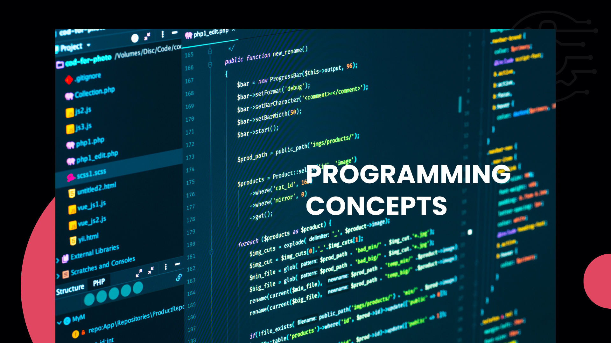
Lesson 1: Computer Architecture and Data Basics
In the first lesson of Chapter 2, students delve into the fundamental concepts of computer architecture and data. They learn about the different components of a computer system, including the CPU, memory, storage, and input/output devices. Students gain an understanding of how data is represented and stored in binary form, exploring concepts like bits, bytes, and hexadecimal notation.
The lesson also covers the basic data types used in programming, such as integers, floating-point numbers, characters, and boolean values. Students learn about the concept of variables and how they are used to store and manipulate data in programs. They explore the principles of data organization, including arrays and data structures like stacks and queues.
Lesson 2: How Programming Languages Work
The second lesson focuses on understanding how programming languages work. Students explore the different levels of programming languages, from low-level languages like assembly language to high-level languages like Python and Java. They learn about the compilation and interpretation processes, gaining insights into how source code is translated into machine code or executed directly by an interpreter.
Students also explore the syntax and semantics of programming languages, understanding the rules and conventions for writing correct and meaningful code. They learn about variables, data types, control structures (such as conditionals and loops), and functions. Students are introduced to the concept of object-oriented programming (OOP) and its principles, such as encapsulation, inheritance, and polymorphism.
Lesson 3: Basic Command Line Tools, VIM Editor, HTML, CSS, JavaScript
The third lesson introduces students to various essential tools and technologies used in programming. They learn about command-line interfaces (CLI) and basic command line tools, enabling them to navigate directories, manipulate files, and execute programs through the command line. Students also discover the VIM text editor, exploring its features and commands for efficient code editing.
The lesson further delves into web technologies, starting with HTML (Hypertext Markup Language). Students learn the structure and elements of HTML, enabling them to create static web pages. They then explore CSS (Cascading Style Sheets) and its role in styling web pages, including layout, colors, and typography. Additionally, students are introduced to JavaScript, the programming language that adds interactivity and dynamic behavior to web pages.
Lesson 4: Python Basics, Java Basics, GIT, Databases, SQL
In the final lesson of Chapter 2, students are introduced to two widely used programming languages: Python and Java. They learn the basics of Python programming, including syntax, variables, control structures, functions, and data structures. Students gain hands-on experience by writing simple programs and solving programming exercises.
Similarly, students explore the basics of Java programming, including its syntax, data types, control flow, and object-oriented principles. They learn how to write and execute Java programs, gaining familiarity with concepts like classes, objects, methods, and inheritance.
Furthermore, the lesson introduces students to GIT, a popular version control system used in software development. They learn about creating repositories, committing changes, branching, merging, and collaborating with others using GIT.
The lesson concludes with an introduction to databases and SQL (Structured Query Language). Students understand the purpose of databases and how they are used to store, retrieve, and manipulate structured data. They learn basic SQL commands for creating tables, inserting data, querying data, and performing simple data manipulation tasks.
Chapter 3: Domains of AI
To go to the chapter, click here
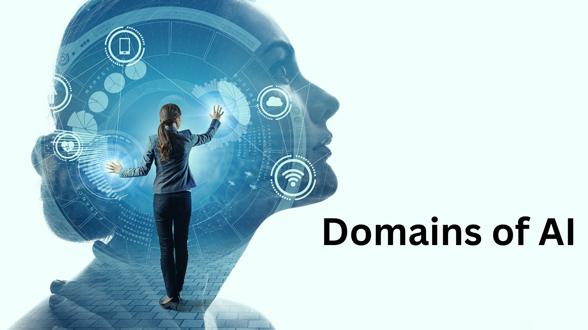
Lesson 1: Natural Language Processing (NLP)
The first lesson of Chapter 3 focuses on one of the domains of AI: Natural Language Processing (NLP). Students learn about the challenges and techniques involved in processing and understanding human language using computers. They explore various NLP applications, such as language translation, sentiment analysis, and chatbots.
Students delve into the basics of text processing, including tokenization, stemming, and lemmatization. They also learn about syntactic analysis, semantic analysis, and named entity recognition. Through hands-on activities and projects, students gain practical experience in working with text data and applying NLP techniques using popular libraries and frameworks.
Lesson 2: Computer Vision
The second lesson delves into the domain of Computer Vision, which involves teaching computers to understand and interpret visual data. Students explore the fundamental concepts of image processing, object detection, and image classification. They learn about feature extraction, image segmentation, and techniques for recognizing objects, faces, and scenes in images and videos.
Students gain hands-on experience by working with image datasets and implementing computer vision algorithms using libraries and frameworks such as OpenCV and TensorFlow. They learn about pre-trained models and how to fine-tune them for specific tasks. Throughout the lesson, students discover the wide range of applications for computer vision, including autonomous vehicles, facial recognition, and medical imaging.
Lesson 3: Data for AI
The third lesson focuses on the importance of data in AI and explores the domain of Data for AI. Students learn about the significance of high-quality, labeled datasets in training AI models. They gain insights into data collection, annotation, and preprocessing techniques. Students also understand the ethical considerations related to data privacy, bias, and fairness.
The lesson covers different data types used in AI, including structured, unstructured, and semi-structured data. Students learn about data storage and management technologies such as relational databases, NoSQL databases, and data lakes. They explore data wrangling techniques to clean and transform datasets, preparing them for analysis and model training.
Throughout the lesson, students understand the role of data in AI decision-making processes and the importance of data quality and integrity. They also explore data visualization techniques to gain insights and communicate findings effectively.
Chapter 3 of the AI Wizard course introduces students to three important domains of AI: Natural Language Processing (NLP), Computer Vision, and Data for AI. By studying NLP, students gain an understanding of how computers can process and interpret human language, enabling applications such as language translation and sentiment analysis. Through the Computer Vision lesson, students learn how computers can analyze and understand visual data, leading to applications like object recognition and image classification. Finally, the Data for AI lesson emphasizes the significance of high-quality data in training AI models, covering data collection, preprocessing, storage, and ethical considerations.
By exploring these domains, students gain a broader understanding of the diverse applications of AI and the specific techniques and challenges associated with each domain. This knowledge equips them with a strong foundation to further explore and specialize in their areas of interest within the field of AI.
Chapter 4: AI Terms and Definitions
To go to the chapter, click here
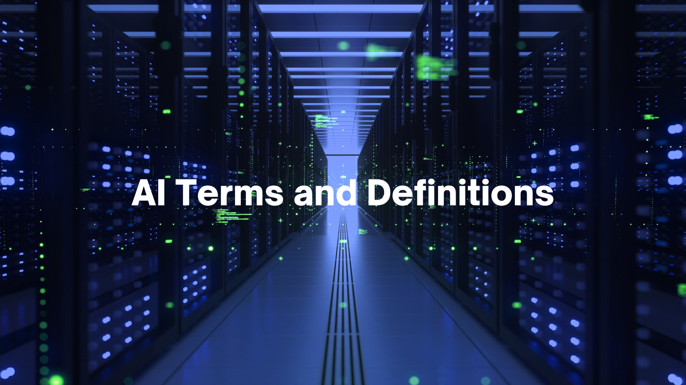
Lesson 1: AI Vocabulary
The first lesson of Chapter 4 focuses on familiarizing students with the vocabulary and terminology commonly used in the field of AI. Students learn key terms and definitions that are frequently encountered in discussions, articles, and everyday life. This lesson aims to enhance students' understanding of AI concepts and enable them to communicate effectively about AI-related topics.
Students explore various AI terms, such as machine learning, neural networks, algorithms, and deep learning. They learn about different types of AI, including narrow AI and general AI, as well as concepts like supervised learning, unsupervised learning, and reinforcement learning. Through examples and explanations, students grasp the meaning and significance of these terms in the context of AI applications and technologies.
Lesson 2: AI Terms in Daily Life
The second lesson delves into how AI terms and concepts are relevant and integrated into our daily lives. Students discover how AI technologies are shaping various industries and sectors, including healthcare, finance, transportation, and entertainment. They explore real-world examples where AI plays a crucial role, such as virtual assistants, recommendation systems, fraud detection, and autonomous vehicles.
Students learn to identify AI terms and concepts in news articles, advertisements, and popular media. They analyze how AI is transforming society and influencing decision-making processes in different domains. By understanding the impact of AI in their everyday lives, students develop a deeper appreciation for the potential and implications of AI technologies.
Throughout the lessons, students engage in discussions, activities, and quizzes to reinforce their understanding of AI vocabulary and its practical applications. They are encouraged to use AI terms confidently and accurately, enabling them to actively participate in conversations and contribute to the AI discourse.
Chapter 4 of the AI Wizard course focuses on AI terms and definitions, empowering students with a comprehensive understanding of the vocabulary commonly used in the field of AI. By studying AI terms, students gain the ability to comprehend AI-related content and communicate effectively about AI concepts. Moreover, they explore the practical relevance of AI in various industries and learn to recognize AI terms in everyday life. This chapter enhances students' AI literacy and equips them with the necessary knowledge to navigate the AI landscape confidently.
Chapter 5: AI in Daily Life
To go to the chapter, click here
Lesson 1: Lumen5 - Creating Videos with AI
The first lesson of Chapter 5 introduces students to Lumen5, an AI-powered platform for creating videos. Students learn how AI is used to automate the video creation process by analyzing text and selecting relevant images, video clips, and music. They explore the functionalities of Lumen5, including text-to-video conversion, customization options, and sharing capabilities.
Students gain hands-on experience with Lumen5 through interactive exercises and tutorials. They learn how to input text, choose a video style, and customize the video's visual and audio elements. By creating their own videos using AI technology, students develop an understanding of how AI can simplify and enhance creative processes.
Lesson 2: AIDA Website Assistant
In the second lesson, students discover AIDA, an AI-powered website assistant. AIDA stands for Artificial Intelligence Digital Assistant and is designed to provide personalized assistance to website visitors. Students explore the features and capabilities of AIDA, such as chatbot interactions, intelligent recommendations, and data analytics.
Through case studies and examples, students learn how AIDA assists users in navigating websites, finding information, and completing tasks. They understand how AI algorithms enable AIDA to learn user preferences, make predictions, and offer tailored recommendations. Students also gain insights into the ethical considerations and privacy concerns related to AI-powered virtual assistants.
Lesson 3: Other Applications of AI in Daily Life
The final lesson of Chapter 5 showcases various other applications of AI in daily life. Students explore how AI is utilized in areas such as healthcare (diagnosis, personalized medicine), finance (fraud detection, trading algorithms), transportation (autonomous vehicles, route optimization), and entertainment (recommendation systems, virtual reality).
Through real-world examples and case studies, students witness the wide-ranging impact of AI on society. They understand how AI technologies improve efficiency, accuracy, and convenience in different aspects of daily life. Moreover, students explore the potential benefits and challenges associated with AI adoption in these domains.
Chapter 5 of the AI Wizard course provides students with an overview of AI applications in daily life. By examining platforms like Lumen5 and AIDA, students learn how AI is integrated into creative processes and website assistance. They also explore other domains where AI is prevalent, gaining insights into its transformative effects on industries and society as a whole. This chapter equips students with the knowledge to recognize and appreciate AI's influence in their daily lives and prepares them to engage with AI technologies responsibly and ethically.
Chapter 6: Big 5 Ideas
To go to the chapter, click here
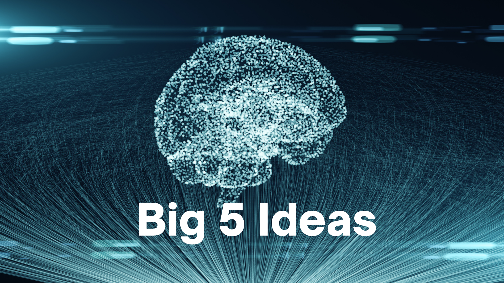
Lesson 1: Perception and Sensing
The first lesson in Chapter 6 focuses on the concept of perception and sensing in AI. Students explore how AI systems gather and interpret data from the environment through various sensors such as cameras, microphones, and touch sensors. They learn about image recognition, speech recognition, and sensor data analysis techniques that enable AI systems to perceive and understand the world around them. Through hands-on activities and experiments, students gain practical insights into how perception plays a crucial role in AI applications.
Lesson 2: Learning and Adaptation
The second lesson delves into the idea of learning and adaptation in AI. Students discover how AI systems can acquire knowledge and improve their performance through learning algorithms. They explore different learning paradigms, including supervised learning, unsupervised learning, and reinforcement learning. Students gain an understanding of training data, labels, features, and prediction models used in AI learning. They engage in practical exercises where they train AI models using real-world datasets, enabling them to witness the power of learning algorithms in action.
Lesson 3: Natural Interaction and Human-AI Collaboration
In the third lesson, students explore the concept of natural interaction and human-AI collaboration. They learn how AI systems are designed to understand and respond to human language, gestures, and emotions. Students explore natural language processing techniques, gesture recognition, and affective computing. They gain insights into the challenges and ethical considerations associated with building AI systems that can interact naturally with humans. Through interactive activities and discussions, students develop a deeper appreciation for the potential of natural interaction in shaping the future of AI.
Lesson 4: Societal Impact and Ethical Considerations
The fourth lesson focuses on the societal impact of AI and the associated ethical considerations. Students examine the broader implications of AI on society, including issues of bias, privacy, and job displacement. They explore case studies that highlight the ethical dilemmas and societal challenges posed by AI adoption. Through critical analysis and group discussions, students develop a well-rounded perspective on the ethical responsibilities of AI developers and users. They also explore strategies for ensuring the responsible and inclusive deployment of AI technologies.
Lesson 5: Representation and Reasoning
The fifth lesson introduces students to the methods and algorithms used for representing knowledge and performing reasoning in AI systems. They learn about symbolic representation, knowledge graphs, and logical reasoning techniques. Students explore how AI systems leverage these methods to make informed decisions and solve complex problems. Through hands-on exercises, students gain practical experience in building knowledge graphs and using logical reasoning tools to solve AI-related tasks.
Lesson 6: Future Directions and Innovations
The final lesson of Chapter 6 focuses on the future directions and innovations in AI. Students explore emerging trends and advancements in AI research and applications. They learn about cutting-edge technologies such as deep learning, generative AI, and explainable AI. Students engage in discussions and brainstorming sessions to envision the potential impact of AI on various industries and society as a whole. They also reflect on their learning journey throughout the course and consider their own roles in shaping the future of AI.
Chapter 6 of the AI Wizard course presents six lessons centered around the "Big 5 Ideas" in AI: perception and sensing, learning and adaptation, natural interaction and human-AI collaboration, societal impact and ethical considerations, representation and reasoning, and future directions and innovations. Each lesson provides students with a deep understanding of these fundamental concepts and their implications in AI development and application. By exploring these lessons, students gain the knowledge and skills necessary to navigate the dynamic field of AI and contribute meaningfully to its future.
Chapter 7: Introduction to Python
To go to the chapter, click here
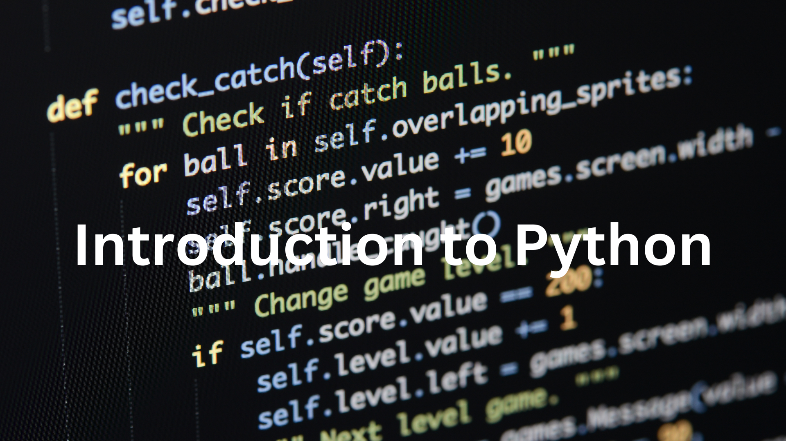
Lesson 1: Getting Started with Anaconda and Jupyter Notebooks
In the first lesson of Chapter 7, students are introduced to Anaconda, a popular Python distribution, and Jupyter Notebooks, an interactive coding environment. They learn how to install Anaconda and set up their programming environment. Students explore the features and benefits of Jupyter Notebooks, including its ability to combine code, visualizations, and explanations in a single document. They practice writing and executing simple Python code snippets within Jupyter Notebooks, getting comfortable with the interactive and iterative nature of Python programming.
Lesson 2: Python Basics
The second lesson dives into the fundamentals of Python programming. Students learn essential concepts such as comments, prints, variables, keywords, identifiers, and constants. They gain an understanding of Python's data types, including integers, floats, strings, booleans, and more. Students explore operators and their usage in performing arithmetic, comparison, and logical operations. They also grasp the concept of conditional statements, including if-else and nested if-else structures, allowing them to control the flow of their Python programs effectively.
Lesson 3: Data Structures and Control Flow
In the third lesson, students explore the various data structures and control flow mechanisms available in Python. They learn about lists, tuples, dictionaries, and sets, understanding their characteristics and use cases. Students gain hands-on experience in manipulating these data structures, performing operations like accessing elements, adding or removing items, and iterating over them. They also delve into loops, including for and while loops, and understand how to use them to execute repetitive tasks efficiently.
Lesson 4: Functions and Classes
The fourth lesson focuses on the concepts of functions and classes in Python. Students learn how to define and use functions to organize their code into reusable blocks. They explore function parameters, return statements, and function documentation. Students also delve into object-oriented programming (OOP) by understanding the principles of classes, objects, attributes, and methods. They create their own classes, define methods, and explore inheritance to build hierarchical relationships between classes.
Lesson 5: Examples
Comments, Prints, and Variables:
print("Hello, world!")
Assigning variables and performing arithmetic operations
x = 5
y = 3
z = x + y
print("The sum of", x, "and", y, "is", z)
Conditional Statements and Loops:
age = 15
if age >= 18:
print("You are eligible to vote.")
else:
print("You are not eligible to vote yet.")
Using a for loop to iterate over a list
numbers = [1, 2, 3, 4, 5]
for num in numbers:
print(num)
Lists, Tuples, and Dictionaries:
fruits = ["apple", "banana", "orange"]
fruits.append("grape")
print(fruits)
Accessing values in a dictionary
student = {"name": "John", "age": 15, "grade": "9th"}
print("Name:", student["name"])
print("Age:", student["age"])
print("Grade:", student["grade"])
Functions and Classes:
def greet(name):
print("Hello,", name)
greet("Alice")
greet("Bob")
Creating a simple class
class Rectangle:
def __init__(self, width, height):
self.width = width
self.height = height
def area(self):
return self.width * self.height
rectangle = Rectangle(5, 3)
print("Area:", rectangle.area())
Lesson 6: Introduction to Packages and NumPy
In the fifth lesson, students are introduced to the concept of packages and libraries in Python. They learn how packages extend Python's functionality by providing additional modules and functions. Students explore the process of installing packages using package managers like pip. They specifically delve into the NumPy package, a fundamental library for scientific computing with Python. Students gain hands-on experience in using NumPy to perform array operations, mathematical computations, and data manipulation tasks. They understand the significance of NumPy in AI applications and its role in handling large datasets efficiently.
Chapter 7 of the AI Wizard course covers a range of essential topics related to Python programming. Students start by setting up their programming environment with Anaconda and Jupyter Notebooks. They then dive into Python basics, including variables, data types, operators, conditional statements, and loops. Students also explore the fundamental data structures of lists, tuples, dictionaries, and sets. They learn how to define and use functions and classes to organize their code and implement object-oriented programming concepts. Additionally, students are introduced to the concept of packages and libraries, with a focus on the popular NumPy package for scientific computing. Through hands-on exercises and practical examples, students gain a solid foundation in Python programming, equipping them with the necessary skills to implement AI algorithms and manipulate data effectively.
Chapter 8: Introduction to Conversational AI and Chatbots
To go to the chapter, click here
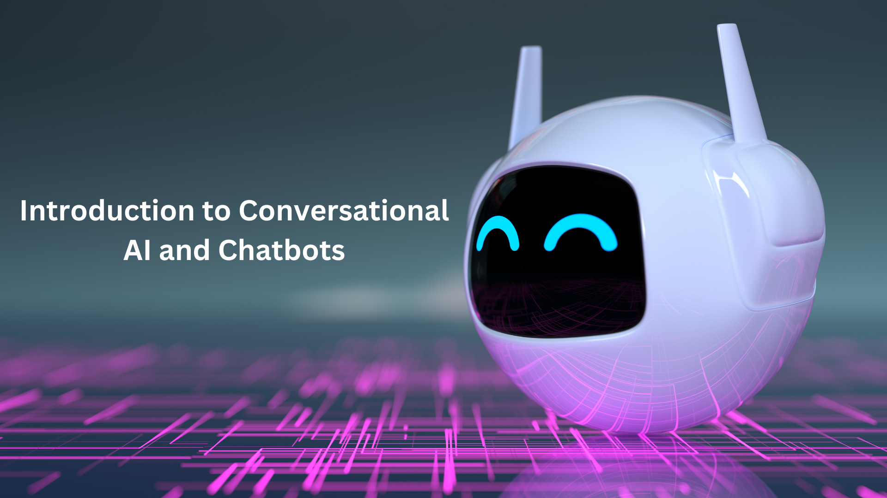
In this chapter, you will delve into the fascinating world of conversational AI and chatbots. The lessons in this chapter will provide you with a comprehensive understanding of the concepts, benefits, and practical applications of chatbots in various industries.
Lesson 1: Introduction to Conversational AI
Conversational AI refers to the technology that enables machines to engage in natural, human-like conversations. You will explore the role of chatbots in improving customer experiences and engagement. By using chatbots, businesses can automate customer support, provide personalized recommendations, and streamline various processes. This lesson will highlight the wide-ranging applications of conversational AI across industries such as e-commerce, healthcare, and customer service.
Lesson 2: Introduction to Chatbots
Chatbots are computer programs designed to simulate human-like conversations. You will gain a deeper understanding of how chatbots work and their significance in modern-day interactions. You will explore different types of chatbots, including rule-based and AI-powered chatbots. Rule-based chatbots follow predefined rules and are suitable for simple interactions, while AI-powered chatbots leverage natural language processing (NLP) and machine learning to provide more advanced and context-aware responses.
Lesson 3: Benefits of Messenger Chatbots
Messaging platforms like Messenger have become popular channels for businesses to interact with customers. In this lesson, you will discover the benefits of using chatbots on Messenger. Chatbots can enhance customer support and service by providing instant responses, handling FAQs, and guiding customers through the purchasing process. Additionally, chatbots can increase customer engagement and generate leads by delivering personalized recommendations, promotions, and updates.
Lesson 4: Introduction to Chatfuel
Chatfuel is a user-friendly chatbot building platform that enables you to create chatbots without coding. You will be introduced to Chatfuel and explore its features and capabilities. You will learn how to navigate the Chatfuel interface, create chatbot flows, and manage user interactions. By the end of this lesson, you will have a solid foundation in using Chatfuel as a powerful tool for building chatbots.
Lesson 5: Blocks in Chatfuel
Chatfuel employs a block-based approach for building conversational flows. In this lesson, you will learn about blocks and how they organize the conversation logic of your chatbot. You will discover how to create and structure blocks to guide the flow of the conversation based on user inputs. Additionally, you will explore conditions and actions within blocks, enabling you to create interactive chatbot experiences tailored to specific user interactions.
Lesson 6: Plugins in Chatfuel
Plugins in Chatfuel offer additional functionality to enhance the capabilities of your chatbot. You will explore a variety of plugins available in Chatfuel, including Quick Reply, AI (Keywords), Gallery, Product Variations, and Upsells. These plugins enable you to create dynamic and engaging chatbot experiences. You will learn how to customize and configure each plugin to meet the specific requirements of your chatbot.
Lesson 7: Broadcasts in Chatfuel
Broadcasts allow you to send targeted messages to specific groups of users. In this lesson, you will learn about broadcasts in Chatfuel and how to leverage them effectively. You will discover how to create broadcast messages to send updates, notifications, and promotional offers to your chatbot users. By mastering broadcasts, you can create personalized marketing campaigns and deliver timely announcements to engage and retain your audience.
Lesson 8: Configuring Tab in Chatfuel
The Configuring Tab in Chatfuel provides various settings to customize the behavior and appearance of your chatbot. You will explore this tab and its features in detail. You will learn how to manage default replies, set up AI rules to handle specific user inputs, create persistent menus for easy navigation, and configure other settings to enhance the performance and user experience of your chatbot.
Lesson 9: Migrating Data to Google Sheets
Managing and analyzing data is an essential aspect of chatbot development. In this lesson, you will learn how to migrate data from your chatbot to Google Sheets. This functionality allows you to collect user information, track interactions, and analyze data for insights and decision-making. You will explore the process of integrating Google Sheets with your chatbot and implementing data migration techniques.
Lesson 10: Adding GIFs and Emojis
Visual elements like GIFs and emojis can add a touch of personality and engagement to your chatbot conversations. In this lesson, you will discover how to incorporate GIFs and emojis into your chatbot responses. You will learn about available libraries and tools that enable you to search and include relevant GIFs and emojis based on user interactions, making your chatbot interactions more lively and interactive.
Lesson 11: Onboarding Script
The onboarding process sets the tone for a user's interaction with your chatbot. In this lesson, you will explore the importance of a well-designed onboarding script. You will learn how to craft an engaging and informative onboarding message that introduces your chatbot's features, guides users through initial interactions, and sets clear expectations for their experience. A well-executed onboarding script can enhance user satisfaction and encourage continued engagement.
Chapter 9: Introduction to Machine Learning (ML)
To go to the chapter, click here
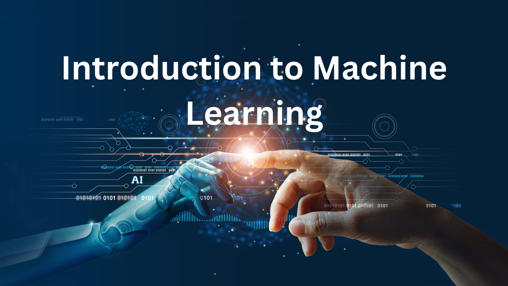
Lesson 1: Introduction to ML
This lesson serves as an introduction to the fascinating field of Machine Learning (ML). You will gain an understanding of what ML is and its significance in various industries. You will explore the fundamental concepts of ML, such as training data, models, and predictions. Additionally, you will learn about different types of ML algorithms and their applications in real-world scenarios.
Lesson 2: ML Applications
In this lesson, you will delve into the diverse applications of ML across different domains. You will discover how ML is revolutionizing industries such as healthcare, finance, marketing, and transportation. The lesson will showcase specific examples of ML applications, highlighting the impact and potential of this technology in solving complex problems and driving innovation.
Lesson 3: Image Colorization
Image colorization is a captivating application of ML, allowing black and white images to be automatically transformed into color images. In this lesson, you will explore the techniques and algorithms used for image colorization. You will learn how ML models can be trained to understand and predict colors based on patterns and contextual information. By the end of the lesson, you will have a clear understanding of the image colorization process and its implementation.
Lesson 4: Scene Recognition
Scene recognition is another exciting application of ML that enables computers to understand and categorize different scenes or environments in images or videos. In this lesson, you will discover how ML algorithms can be trained to identify specific objects, landmarks, or scenes within visual data. You will learn about the underlying techniques, such as convolutional neural networks (CNNs), and explore practical examples of scene recognition in action.
Lesson 5: Overview of ML in Detail
Building upon the introductory lesson, this lesson provides a comprehensive overview of ML, covering key concepts, algorithms, and methodologies in detail. You will delve deeper into supervised and unsupervised learning, reinforcement learning, and deep learning. The lesson will also touch upon important topics such as model evaluation, bias and fairness in ML, and ethical considerations surrounding the use of ML algorithms.
Lesson 6: ML Using Python
Python is a popular programming language for ML tasks due to its simplicity, versatility, and robust ecosystem of libraries. In this lesson, you will learn how to leverage Python for ML projects. You will explore widely used libraries such as scikit-learn and TensorFlow, and gain hands-on experience in implementing ML algorithms, preprocessing data, and evaluating model performance using Python.
Lesson 7: Image Classification Using Python
Image classification is a fundamental task in ML, where an ML model learns to classify images into predefined categories or labels. In this lesson, you will focus specifically on image classification using Python. You will learn about the steps involved in building an image classification model, including data preprocessing, model training, and evaluation. By the end of the lesson, you will be able to develop and deploy an image classification model using Python.
Chapter 9 provides a comprehensive understanding of Machine Learning (ML) and its applications. You will explore various real-world applications, such as image colorization and scene recognition, which demonstrate the power of ML in solving complex problems. The chapter also offers a detailed overview of ML concepts, algorithms, and methodologies. Additionally, you will gain practical experience in implementing ML using Python, with a specific focus on image classification. By the end of this chapter, you will have a solid foundation in ML and be equipped with the skills to apply ML techniques to various domains and problems.
Chapter 10: Math for AI
To go to the chapter, click here
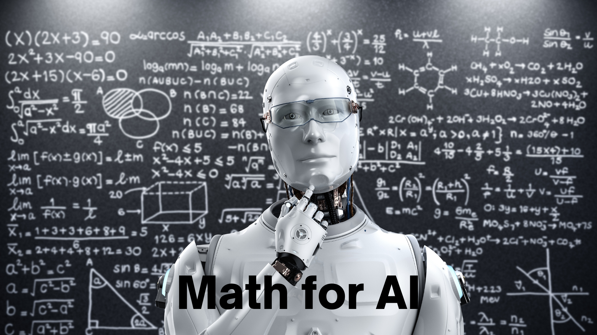
Lesson 1: Foundations of Mathematics
This lesson serves as an introduction to the foundational concepts of mathematics that are essential for understanding and applying AI algorithms. You will explore fundamental mathematical concepts such as numbers, arithmetic operations, algebraic expressions, and equations. Additionally, you will learn about mathematical properties, sets, and functions. This lesson aims to provide you with a solid mathematical foundation necessary for studying AI.
Chapter 10 focuses on the mathematical concepts necessary for understanding and applying AI algorithms effectively. The lessons cover a range of mathematical topics, including foundations of mathematic. By studying these lessons, you will develop a strong mathematical background and gain the necessary skills to comprehend and implement AI algorithms. This chapter sets the stage for deeper exploration of AI concepts and techniques in subsequent chapters.
Chapter 11: Natural Language Processing (NLP)
To go to the chapter, click here
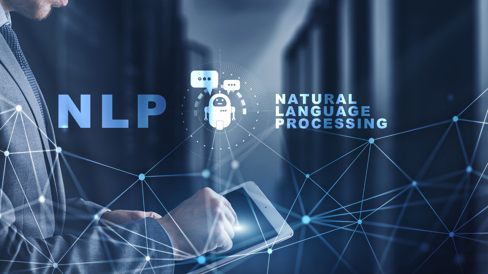
Lesson 1: Introduction to NLP
In this lesson, you will be introduced to the field of Natural Language Processing (NLP) and its significance in AI. You will learn about the fundamental concepts and techniques used in NLP, including text processing, tokenization, stemming, and lemmatization. Additionally, you will explore the challenges and complexities of working with human language data and understand the role of NLP in various AI applications.
Lesson 2: Advantages of NLP
This lesson dives deeper into the advantages of NLP and how it enhances AI capabilities. You will explore how NLP enables machines to understand and generate human language, opening up possibilities for tasks such as sentiment analysis, text classification, information extraction, and machine translation. You will also learn about the benefits of automating language-based tasks and the impact of NLP on improving efficiency, accuracy, and user experience in various industries.
Lesson 3: Uses of NLP
In this lesson, you will explore the diverse range of applications and uses of NLP across different domains. You will discover how NLP is used in chatbots and virtual assistants to enable human-like interactions. You will also learn about text mining and information retrieval techniques that leverage NLP to extract valuable insights from large volumes of text data. Additionally, you will explore NLP applications in sentiment analysis, topic modeling, question-answering systems, and automatic summarization.
Lesson 4: NLP Techniques and Algorithms
This lesson delves into the various techniques and algorithms employed in NLP. You will learn about language modeling, including n-grams and probabilistic language models, which form the basis for many NLP applications. You will also explore techniques such as Named Entity Recognition (NER), Part-of-Speech (POS) tagging, and syntactic parsing, which enable machines to understand the structure and meaning of sentences. Additionally, you will be introduced to machine learning approaches in NLP, including supervised, unsupervised, and deep learning techniques.
Lesson 5: NLP Tools and Libraries
In this lesson, you will discover the wide range of tools and libraries available for NLP tasks. You will learn about popular NLP libraries such as NLTK (Natural Language Toolkit), SpaCy, and Stanford NLP, which provide pre-built functionalities for text processing, language modeling, and NLP algorithms. You will also explore language-specific resources and corpora that can aid in NLP research and development. This lesson will equip you with the knowledge and resources needed to start implementing NLP solutions using existing tools and libraries.
Lesson 6: Future of NLP
The final lesson in this chapter discusses the future directions and advancements in NLP. You will explore emerging trends such as contextual embeddings, transformer models, and pre-trained language models that have revolutionized the field. You will also learn about ongoing research in areas like sentiment analysis, language generation, and dialogue systems. This lesson will inspire you to further explore the evolving landscape of NLP and its potential for transforming AI applications.
Chapter 11 provides a comprehensive introduction to Natural Language Processing (NLP), covering its basics, advantages, and various applications. The lessons take you through the essential concepts, techniques, and algorithms used in NLP, as well as the tools and libraries available for implementing NLP solutions. By studying this chapter, you will gain a solid understanding of NLP and its significance in AI, enabling you to work with text data, build language models, and develop NLP-based applications.
Chapter 12: Computer Vision
To go to the chapter, click here
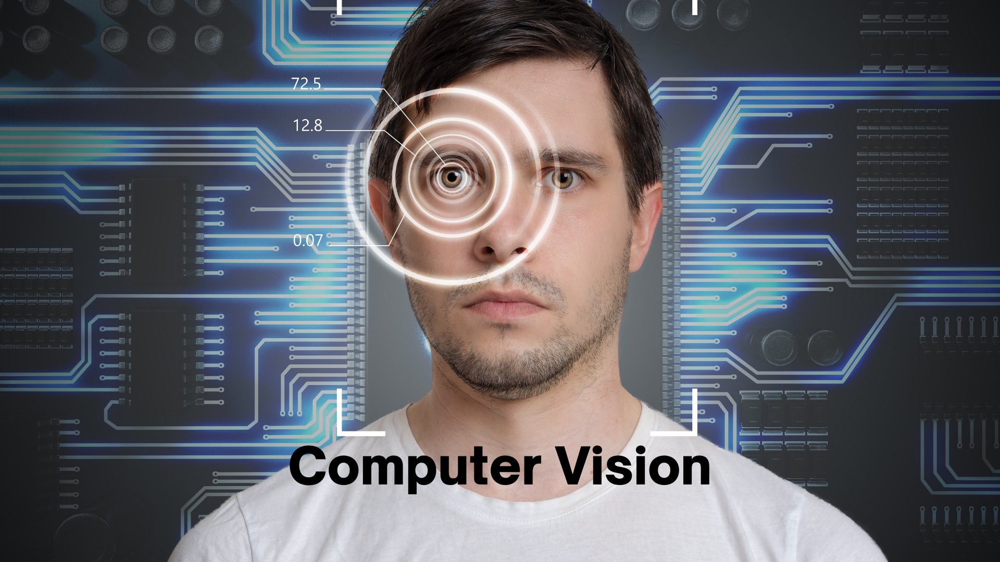
Lesson 1: Introduction to Computer Vision
In this lesson, you will be introduced to the field of Computer Vision and its role in AI. You will learn about the fundamental concepts and techniques used in computer vision, including image processing, feature extraction, and object detection. You will understand how machines can interpret and understand visual data, and explore the challenges involved in analyzing and interpreting images and videos.
Lesson 2: Uses of Computer Vision
This lesson explores the wide range of uses and applications of computer vision. You will discover how computer vision enables machines to perceive and interpret the visual world, leading to applications such as image recognition, object tracking, facial recognition, and scene understanding. You will also explore computer vision's role in autonomous vehicles, surveillance systems, medical imaging, augmented reality, and robotics. By understanding the various uses of computer vision, you will grasp its impact on enhancing human-machine interactions and enabling intelligent visual analysis.
Lesson 3: Object Detection and Recognition
This lesson focuses on object detection and recognition in computer vision. You will learn about algorithms such as Haar cascades, Histogram of Oriented Gradients (HOG), and deep learning-based approaches like Convolutional Neural Networks (CNNs) that enable machines to detect and identify objects within images. You will understand the underlying principles and techniques used to localize and classify objects, and explore real-world applications such as object detection in autonomous vehicles and face recognition in security systems.
Lesson 4: Future of Computer Vision
The final lesson in this chapter discusses the future advancements and trends in computer vision. You will explore cutting-edge technologies such as deep learning-based object detection and segmentation, generative models for image synthesis, and visual understanding in videos. You will also learn about ongoing research in areas like image captioning, video analysis, and visual question answering. This lesson will inspire you to explore the exciting possibilities of computer vision and its potential for transforming various industries.
Chapter 12 provides an in-depth exploration of computer vision, covering its fundamentals, uses, and applications. By studying this chapter, you will gain a solid understanding of computer vision techniques, image processing, object detection and recognition, and the future trends in the field. This knowledge will enable you to work with visual data, develop computer vision models, and apply them to various real-world applications, ultimately enhancing your understanding of AI and its capabilities in visual analysis.
Chapter 13: Robotics
To go to the chapter, click here
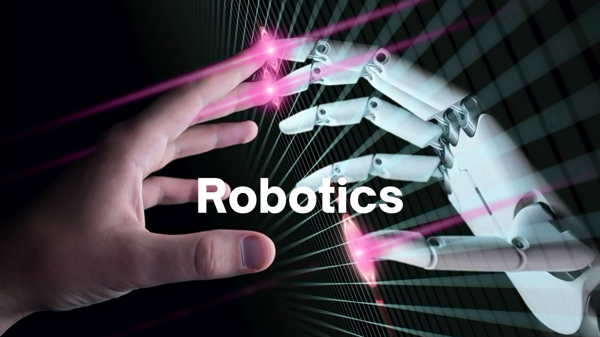
Lesson 1: Introduction to Robotics
In this lesson, you will be introduced to the fascinating world of robotics. You will learn about the basic components of a robot, including sensors, actuators, and control systems. You will understand how robots are designed to interact with the physical world and perform tasks autonomously or under human guidance. You will explore the history of robotics, different types of robots, and their applications in various industries.
Lesson 2: AI in Robotics
This lesson focuses on the integration of artificial intelligence (AI) techniques in robotics. You will discover how AI enables robots to perceive and interpret the environment, make decisions, and learn from experience. You will learn about algorithms such as SLAM (Simultaneous Localization and Mapping) that allow robots to navigate and map their surroundings. You will also explore the use of machine learning and computer vision in robotic systems, enhancing their capabilities in object recognition, motion planning, and human-robot interaction.
Lesson 3: Drones in Tourism
This lesson explores the application of drones in the tourism industry. You will learn about the role of drones in capturing aerial images and videos for promotional purposes, surveying landscapes, and monitoring tourist sites. You will understand how drones equipped with advanced sensors and AI capabilities can provide valuable data for site analysis, crowd management, and security. Additionally, you will explore the regulations and ethical considerations surrounding the use of drones in tourism.
Lesson 4: Future of Robotics
The final lesson in this chapter discusses the future prospects and advancements in robotics. You will learn about the ethical considerations and societal impact of robotics, including the potential for job displacement and the need for responsible AI in robotic systems. This lesson will inspire you to imagine the future possibilities of robotics and the role it plays in shaping our world.
Chapter 13 provides a comprehensive overview of robotics, covering its fundamentals, the integration of AI, drones in tourism, and the future directions of the field. By studying this chapter, you will gain a deep understanding of robotics and its applications in various domains. You will appreciate the synergy between AI and robotics, explore the use of drones in the tourism industry, and gain insights into industrial automation and the future prospects of robotics. This knowledge will equip you with a solid foundation to further explore the field of robotics and its interdisciplinary nature.
Chapter 14: AI Ethics
To go to the chapter, click here
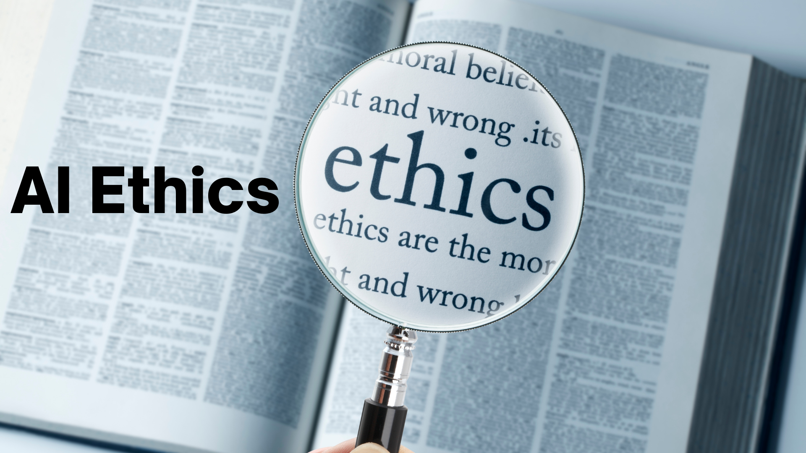
Lesson 1: Introduction to AI Ethics
In this lesson, you will be introduced to the concept of AI ethics and its significance in the field of artificial intelligence. You will learn about the ethical considerations and challenges associated with the development and deployment of AI systems. Topics covered include privacy concerns, algorithmic bias, transparency, accountability, and the impact of AI on social, economic, and political aspects of society. You will explore real-world examples of ethical dilemmas in AI and understand the importance of ethical frameworks and guidelines in guiding the responsible development and use of AI technologies.
Lesson 2: Ethical Issues in AI
This lesson focuses on examining specific ethical issues in AI. You will delve into topics such as data privacy and security, fairness and bias in algorithmic decision-making, the impact of automation on employment, and the potential misuse of AI for surveillance and control. You will explore case studies and engage in discussions about the ethical implications of AI in various contexts, including healthcare, finance, criminal justice, and social media. Through critical thinking and analysis, you will develop a deeper understanding of the complex ethical challenges that arise with the increasing adoption of AI systems.
Lesson 3: Addressing AI Ethics
In the final lesson of this chapter, you will explore strategies and approaches to address AI ethics concerns. You will learn about the concept of responsible AI development and the importance of incorporating ethical considerations into the entire lifecycle of AI systems, from design and development to deployment and monitoring. You will examine the role of government regulations, industry standards, and professional codes of ethics in guiding the responsible use of AI. You will also explore the concept of explainable AI and the need for transparency and accountability in AI decision-making processes. By the end of this lesson, you will gain insights into the ongoing efforts to address AI ethics and the role individuals, organizations, and policymakers play in promoting ethical practices in the field of AI.
Chapter 14 delves into the important topic of AI ethics, covering the introduction to AI ethics, ethical issues in AI, and strategies to address these concerns. By studying this chapter, students will develop a critical understanding of the ethical implications of AI technologies and the responsibility of AI developers and users. They will explore real-world examples, engage in discussions about ethical dilemmas, and gain insights into the various approaches to address AI ethics. This chapter will empower students to think critically about the impact of AI on society and equip them with the knowledge to contribute to the responsible development and deployment of AI systems.
Chapter 15: Technology in Business and Work
To go to the chapter, click here
Lesson 1: Technology in the Modern Workplace
In this lesson, you will explore the role of technology in business and work environments. You will learn about the transformative impact of technology on various aspects of business operations, including communication, collaboration, productivity, and decision-making. Topics covered include cloud computing, data analytics, automation, virtual reality, and artificial intelligence. You will examine case studies and real-world examples to understand how technology is reshaping industries and enabling new opportunities. Additionally, you will discuss the challenges and considerations associated with the integration of technology in the workplace, such as cybersecurity, digital skills gap, and ethical implications. By the end of this lesson, you will have a comprehensive understanding of how technology is revolutionizing business practices and shaping the future of work.
Conclusion:
This comprehensive AI course covers a wide range of topics to provide students in class 7-8 with a solid foundation in artificial intelligence. Throughout the chapters, students are introduced to the fundamental concepts and applications of AI, programming, machine learning, natural language processing, computer vision, robotics, and ethical considerations. Each chapter offers in-depth explanations, real-world examples, and practical exercises to enhance the learning experience.
The course begins with an introduction to AI, emphasizing its importance and relevance in various domains, including sports and robotics. It then progresses to programming concepts, covering computer architecture, data basics, programming languages, and tools like Vim editor and Git. Students will gain hands-on experience in programming languages such as HTML, CSS, JavaScript, Python, and Java.
Domains of AI, including natural language processing, computer vision, and data for AI, are explored to showcase the practical applications of AI in different fields. The course also delves into AI terminology and definitions, ensuring students are familiar with the vocabulary used in the AI domain.
The practical implications of AI in daily life are discussed in detail, highlighting applications like Lumen5 and AIDA website assistant. Students will learn how AI is integrated into various aspects of their daily lives, from personal assistants to recommendation systems.
The course covers the "Big 5" ideas in AI, namely perception, learning, natural interaction, societal impact, and representation and reasoning. These concepts provide a comprehensive understanding of AI's capabilities and its potential impact on society.
Students are introduced to Python programming, starting from the basics and progressing to more advanced topics like functions, classes, and packages. The use of Anaconda and Jupyter Notebooks enables students to practice programming in a user-friendly environment. The course also includes an introduction to databases and SQL, which are essential for managing data in AI applications.
Mathematics for AI is covered to provide students with a solid mathematical foundation necessary for understanding machine learning algorithms and concepts. The chapter covers mathematical topics such as linear algebra, probability, and statistics.
The course then delves into specific AI topics such as natural language processing and computer vision, exploring their advantages, uses, and applications. Students will gain insights into how AI enables machines to understand and process human language and interpret visual data.
The chapter on robotics introduces students to AI in robotics and highlights the use of drones in the tourism industry. Students will understand how AI technology enhances the capabilities of robots and its potential impact on various industries.
Ethical considerations in AI are addressed in a dedicated chapter, emphasizing the importance of responsible AI development. Students will explore ethical issues, such as algorithmic bias and privacy concerns, and learn about strategies to address these challenges.
The course concludes with a focus on the integration of technology in business and work environments. Students will examine how technology is transforming business practices, enabling greater efficiency, productivity, and innovation. The use of technologies like cloud computing, data analytics, and automation are explored, along with the implications and challenges associated with their adoption.
By completing this course, students will have a comprehensive understanding of artificial intelligence, its applications, and its impact on various aspects of life. They will acquire practical skills in programming, data management, and machine learning, preparing them for further studies and future careers in the rapidly evolving field of AI. The course equips students with critical thinking abilities, ethical awareness, and a solid foundation in AI, empowering them to contribute to the responsible and innovative use of AI technologies in the world.